◦ Case study · 2026 ◦
Transforming Dental B2B
Designing a connected ordering workflow for 22,000+ dental clinics.
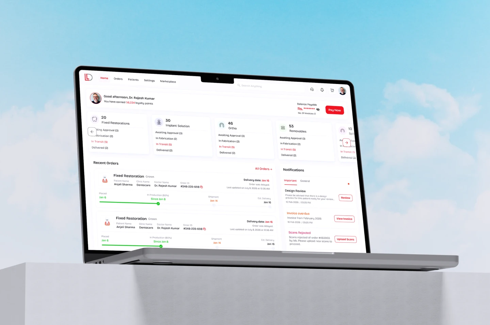
◦ 01 ◦ Overview
Project overview
Laxmi Dental's existing ordering process relied on paper prescriptions, phone calls, WhatsApp, manual data entry, and disconnected clinical assets.
I redesigned the end-to-end ordering experience—from prescription and file upload to production tracking—so dentists could submit complete cases with less back-and-forth and maintain visibility after submission.
◦ 02 ◦ The problem
A fragmented process causing delays, errors and frustrations.
Dental orders are highly customized. A single case can involve patient information, clinical prescriptions, product selection, materials, STL scans, patient photos, lab production, quality checks, and shipment. But these steps were spread across disconnected channels.
The existing workflow
This created friction at multiple points in the order lifecycle.
Manual ordering
Orders were submitted via a chaotic mix of phone calls, handwritten paper prescriptions, and unstructured emails, leading to a high rate of transcription errors.
Fragmented clinical assets
Crucial patient data like 3D intraoral scans and patient photos lived in isolated silos, requiring lab technicians to hunt down assets across different platforms.
Limited production visibility
Once an order entered the lab, doctors lost all visibility. Status updates were manual, reactive, and often required a phone call, creating anxiety and inefficiency.
Complex product discovery
Labs offer hundreds of material combinations. Without a structured catalog, doctors struggled to discover the optimal product for their specific clinical case.
◦ 03 ◦ Research & discovery
Understanding where the workflow breaks
To move beyond assumptions, I conducted stakeholder interviews with Laxmi Dental's internal lab managers and contextual inquiries with dental practitioners in Pune and Mumbai. The goal was to understand how orders were created, where information was lost, why users contacted the lab, and where cognitive and operational friction occurred.
Three core personas emerged
Busy Dentist
- Goal
- Place an order quickly between patient appointments without losing context.
- Pain
- Depends entirely on fragmented calls and scattered WhatsApp messages to get status updates.
- Needs
- Fast, repeatable ordering, saved patient data, and instant order status visibility.
Clinic Administrator
- Goal
- Manage all outgoing orders, organize patient info securely, and handle clinic billing efficiently.
- Pain
- Wastes hours coordinating across multiple digital channels and manual ledgers.
- Needs
- Centralized management dashboard, high-level status visibility, and streamlined billing tools.
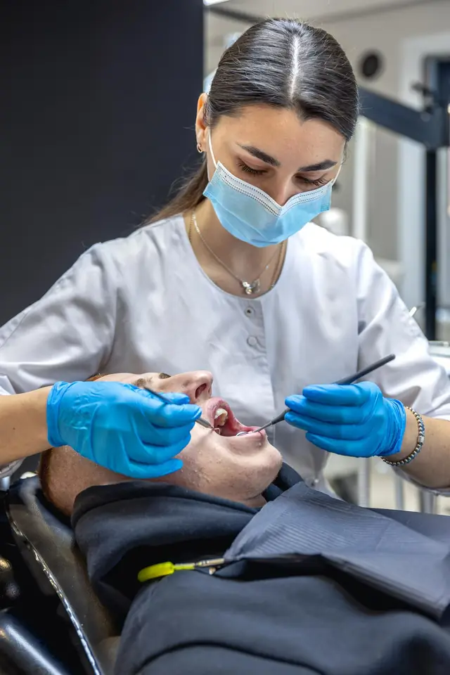
Clinical specialistOrthodontist
- Goal
- Create highly accurate, treatment-specific orders with precise technical requirements.
- Pain
- Complex requirements lead to time-consuming manual prescriptions and frequent errors.
- Needs
- Guided visual workflows, easy connection of digital assets (scans), and accurate component selection.
“I have to call the lab every time to check if my patient's crown is ready. It's a waste of my clinical time.”Dr. Aradhana, Pune
◦ 04 ◦ Key findings
Four insights changed the direction of the product
Through intensive research and shadowing sessions with clinicians, we identified critical friction points that shaped the core strategy of our solution.
The biggest friction happened between diagnosis and prescription
The transition from patient diagnosis to a production-ready lab prescription created significant cognitive load.
Design implication: The ordering experience needed to guide users instead of presenting them with a flat form.
Clinical assets needed to stay connected
Prescriptions, STL scans, and patient images were all part of the same clinical case, but the existing workflow treated them as separate pieces of information.
Design implication: The order should become the single source of truth for all clinical assets.
Tracking was a visibility problem, not just a status problem
Doctors frequently contacted the lab because they could not confidently understand where an order was in production.
Design implication: The platform needed to show meaningful production milestones rather than simply displaying a generic status.
Repeated communication revealed a missing source of truth
Doctors relied on calls and WhatsApp to confirm order details, resolve questions, and check progress, creating unnecessary back-and-forth.
Design implication: The platform needed to centralize order information, communication, and production updates in one reliable workflow.
◦ 05 ◦ Opportunity
How might we make complex dental orders faster, safer, and easier to track?
Based on the research, I identified four opportunities to reduce friction across the dental ordering lifecycle.
Simplify ordering
Reduce manual clinical data entry and guide users through complex prescriptions.
Connect clinical assets
Keep patient information, prescriptions, STL files, and images within the same order context.
Increase production visibility
Replace status calls with clear, milestone-based tracking.
Automate administration
Reduce manual work around billing, invoices, and financial reconciliation.
◦ 06 ◦ Solution strategy
From fragmented communication to one connected order lifecycle
The solution was structured around four core capabilities that connect the complete dental order journey.
Guided Smart Rx
A guided ordering experience replaces flat forms with structured steps and validation.
Goal: Capture complete clinical information before the order reaches the lab.
Integrated asset synchronization
A unified upload experience connects STL scans and patient imagery directly with the digital prescription.
Goal: Reduce the risk of missing or mismatched clinical information by keeping clinical assets connected to the order.
Glass Box production tracker
A milestone-based production tracker gives doctors visibility into the status of custom prosthetic cases.
Goal: Replace calls to the lab with clear visibility into where the order is and what stage comes next.
Automated administrative workflows
A centralized financial experience brings billing and GST-compliant invoices into one place.
Goal: Reduce manual reconciliation and administrative work for clinic staff.
◦ 07 ◦ User flow
From clinical decision to production
The new ordering workflow connects the most important actions into one guided experience, keeping dentists within a single context from prescription to production tracking.
One guided workflow replaces fragmented calls, WhatsApp messages, and file-sharing steps with a single, trackable ordering experience.
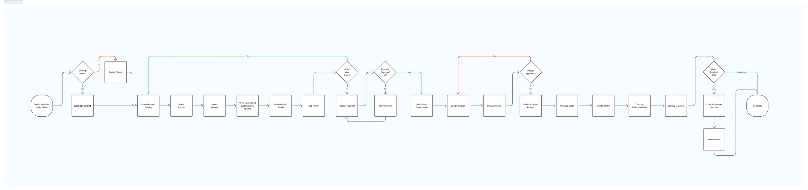
◦ 08 ◦ Sketching & wireframes
From concept to structure
Task flow breakdowns revealed the highest-impact opportunities for simplification. I translated these into quick sketches to explore layout, hierarchy, and interaction patterns before moving into high-fidelity design.
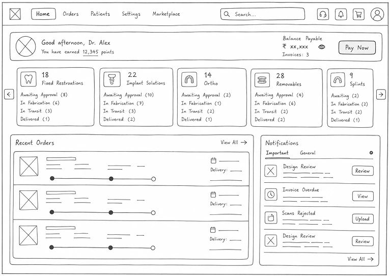
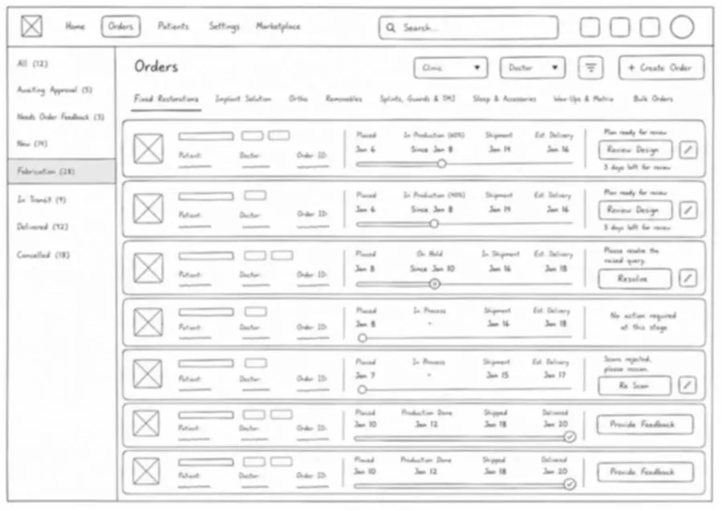
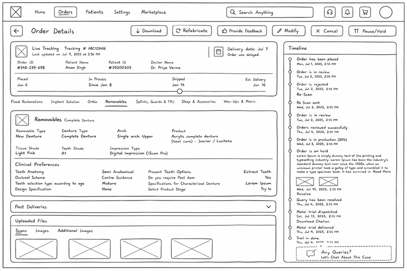
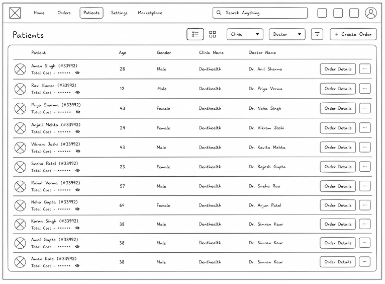
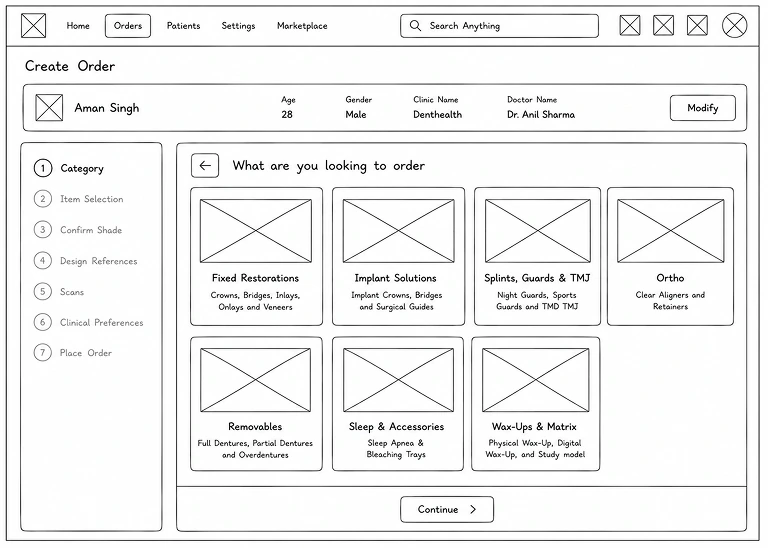
◦ 09 ◦ Key UX decision · Dashboard
Surface the information users need first
Problem
Users needed to quickly access categories, understand order progress, and take action without navigating through multiple screens.
Design decision
I surfaced frequently used categories, order status, progress indicators, notifications, and quick actions directly on the dashboard.
Why
The dashboard should act as an operational starting point rather than simply functioning as a collection of reports.
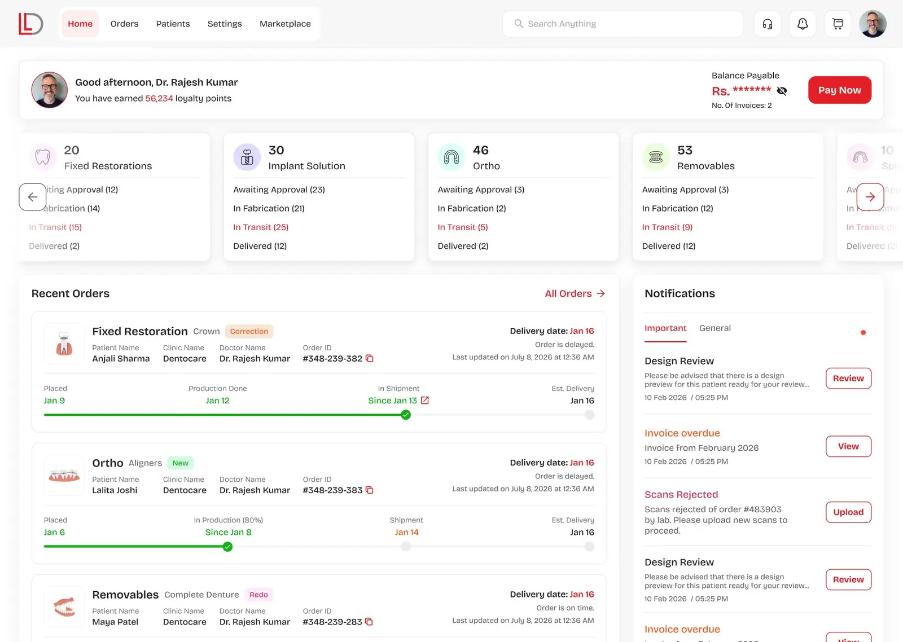
Resulting experience
Order categories
All the categories upfront so users don't need to waste time filtering.
Order progress
Users get live updates about their order.
Review notifications
Users can take quick actions on necessary items after seeing notifications.
Shipment tracking
Users can see real-time shipment tracking.
◦ 10 ◦ Key UX decision · Order listing
Reduce search effort in high-volume workflows
Problem
Users may manage orders across multiple doctors and clinic branches, making it important to find the right case quickly.
Design decision
I made order status, category, doctor, and clinic filters immediately accessible.
Why
The most important filtering controls should be available at the point where users need them rather than hidden behind additional interactions.
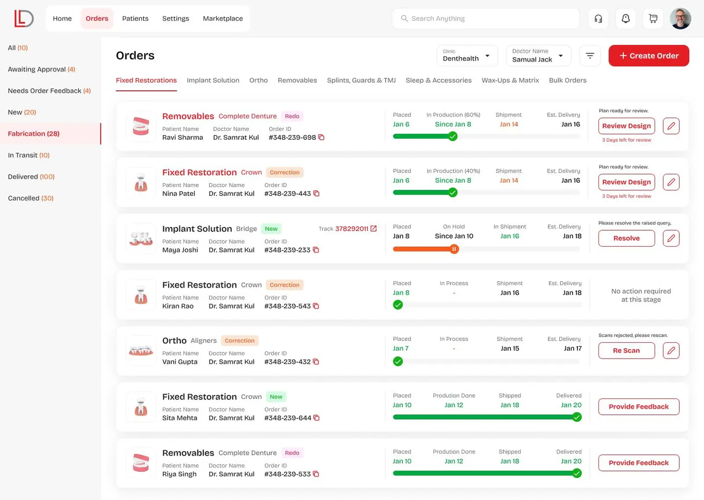
Interface details
Category tabs
Upfront category tabs to save clicks.
Order status
Upfront order status filter to save clicks.
Order details
Basic details like patient name, doctor name, and order ID.
Filters
Filter by doctor or clinic name when a clinic has multiple branches.
Quick actions
Take necessary actions right from the order listing.
◦ 11 ◦ Deep dive · Smart Rx
Turning a flat form into a guided clinical workflow
The existing ordering process relied heavily on manual information exchange. The challenge was to make the prescription process structured without making it feel more complicated.
Instead of asking users to remember every requirement, the interface helps them complete the prescription correctly.
Guided input
Users are taken through a structured sequence.
Validation
Potential issues are identified before submission.
Context
Relevant patient and treatment information remains connected.
Clarity
Complex clinical decisions are broken into manageable steps.
Before: the old loop
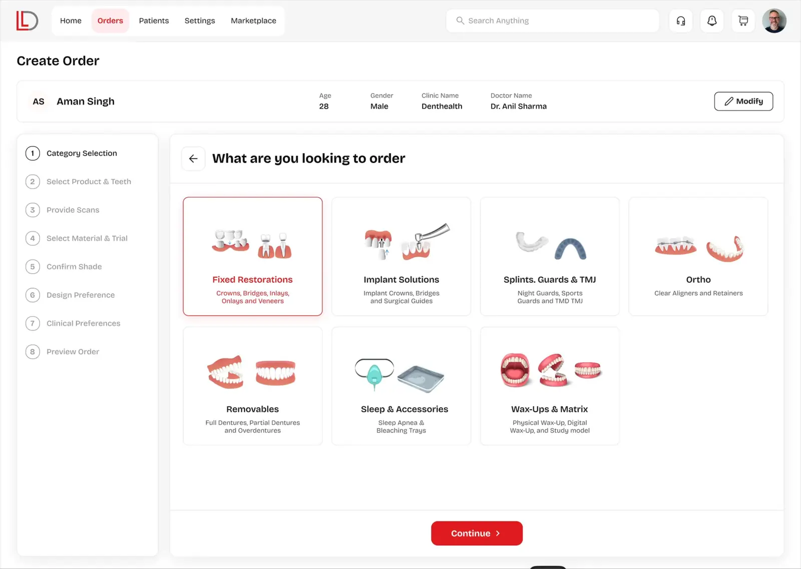
◦ 12 ◦ Deep dive · Order details
One place for the complete case
The Order Details experience brings the most important information together:
Contextual actions
Show relevant actions based on the current order status.
Product details
Review the products and materials included in the order.
Production timeline
Understand the current stage and previous activity.
Clinical assets
Access uploaded scans and patient photographs.
Case communication
Allow users to raise questions or communicate around the specific case.
The goal was to prevent users from losing context while moving between clinical, operational, and communication tasks.
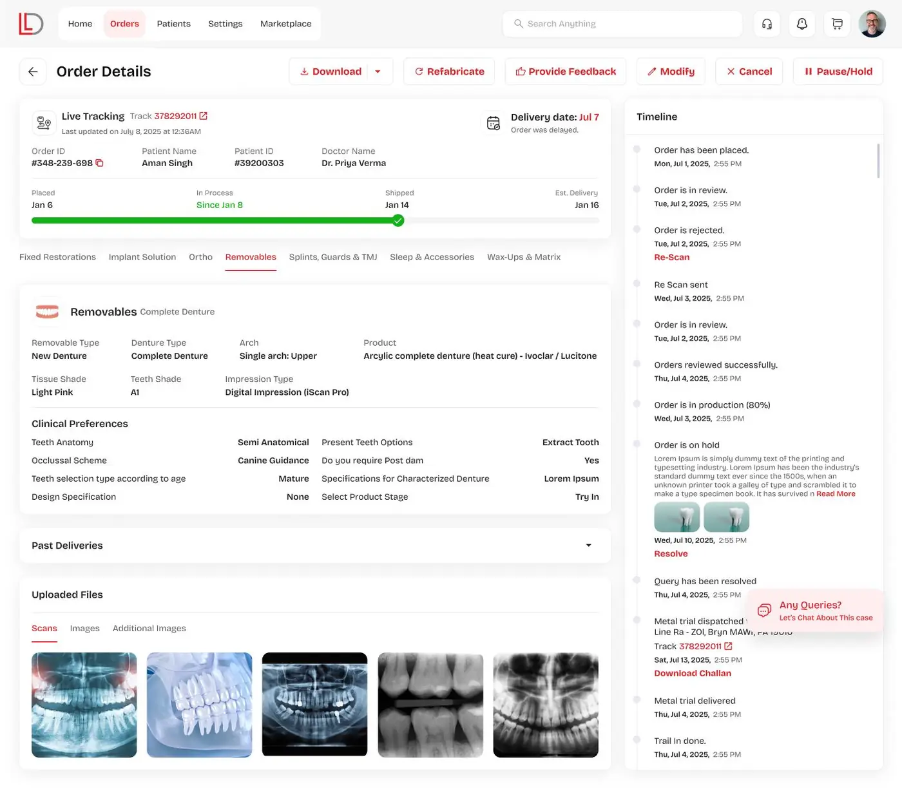
◦ 13 ◦ Outcome
Projected impact
Based on time-motion comparison of the manual WhatsApp/paper workflow vs. the designed Rx Wizard flow, validated through internal usability sessions — not yet measured against live production data.
What the solution is expected to change
Fewer clarification loops
Largely eliminate clarification loops caused by missing clinical details or lost WhatsApp images.
Real-time visibility
Give 22,000+ clinics real-time visibility into production milestones via the Glass Box tracker, replacing manual status calls to the lab.
Less admin overhead
Reduce administrative overhead for clinic staff through automated, GST-compliant billing.
Recommended next step
A phased rollout with a subset of clinics to validate these projections against real-world order data before full-scale deployment.
◦ 14 ◦ Key learnings
What I learned
Workflow thinking
Understand the complete workflow, not just individual screens.
Meaningful automation
Use automation to reduce repetitive work and cognitive load.
Clarity first
Prioritize accuracy, context, and clear feedback.
Evidence over assumptions
Validate design decisions with real-world data.
◦ 15 ◦ Final reflection
Beyond the screen: designing for clinical precision
This project challenged me to think beyond individual screens and design for an interconnected B2B workflow. The goal was not to add more features to the dental ordering experience. It was to remove friction between diagnosis, prescription, production, and delivery.
By connecting clinical data, digital assets, production visibility, and administrative workflows into one platform, the experience creates a clearer and more reliable path from clinic to lab.
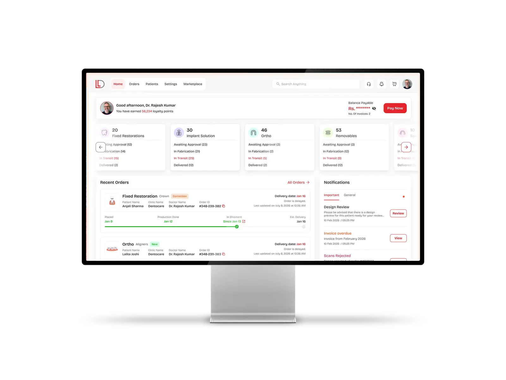